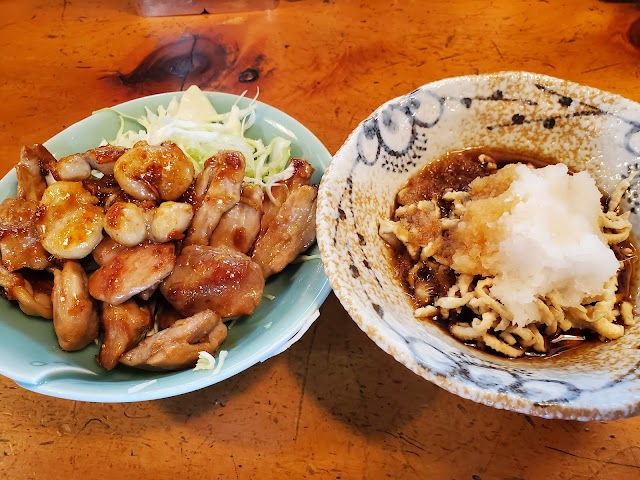
| 営業時間 | 月・水・木・金 11:30〜13:30 ／ 土・日 11:30〜13:30, 17:30〜19:30 |
|---|---|
| 定休日 | 火曜 |
| 住所 | 長野県松本市浅間温泉１丁目１７−３２ |
| 予約 | 要確認 — ☎ 0263-46-5550 ／ 公式サイト |
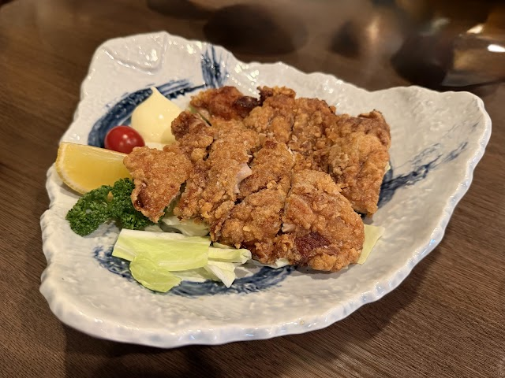
| 営業時間 | 月・火・水・木 17:30〜21:30 ／ 金・土 17:00〜21:30 |
|---|---|
| 定休日 | 日曜 |
| 住所 | 長野県松本市中央１丁目２−１２ |
| 予約 | 可 — ☎ 0263-36-2544 ／ 公式サイト |
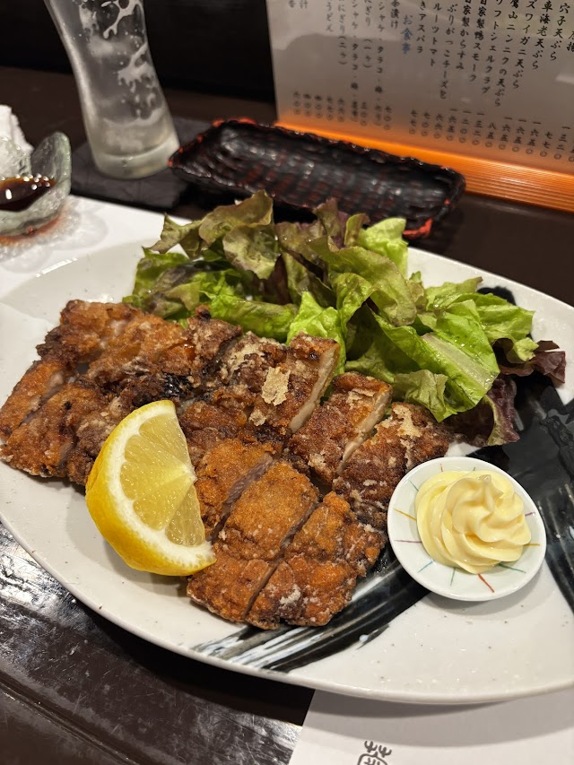
| 営業時間 | 月・火・水・木・金・土 17:30〜22:00 |
|---|---|
| 定休日 | 日曜 |
| 住所 | 長野県松本市大手４丁目７−１０ |
| 予約 | 可 — ☎ 0263-36-3728 ／ 公式サイト |
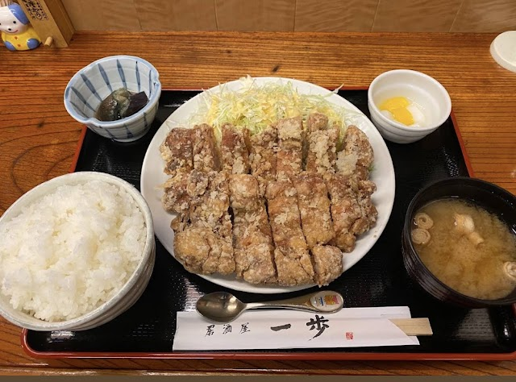
| 営業時間 | 月・火・水・木・金 11:30〜14:00, 17:30〜22:00 ／ 土 17:30〜22:00 |
|---|---|
| 定休日 | 日曜 |
| 住所 | 長野県松本市大手４丁目１０−１７ |
| 予約 | 可 — ☎ 0263-36-8484 ／ 公式サイト |
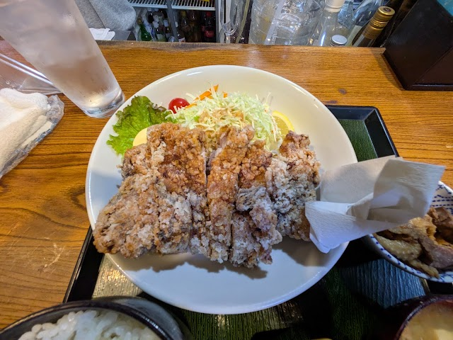
| 営業時間 | 月・火 11:30〜14:00, 17:00〜23:00 ／ 木・金・土・日 17:00〜23:00 |
|---|---|
| 定休日 | 水曜 |
| 住所 | 長野県塩尻市大門七番町１０−１ |
| 予約 | 可 — ☎ 0263-52-0743 ／ 公式サイト |
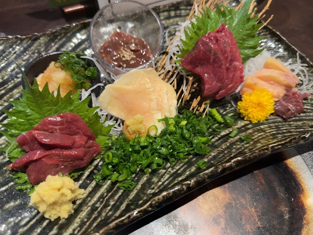
| 営業時間 | 月・火・水・木・金・土・日 11:30〜14:00, 17:00〜22:00 |
|---|---|
| 定休日 | なし(要最終確認) |
| 住所 | 長野県松本市中央１丁目７−１７ 毛利ビル |
| 予約 | 可 — ☎ 0263-39-0141 ／ 公式サイト |
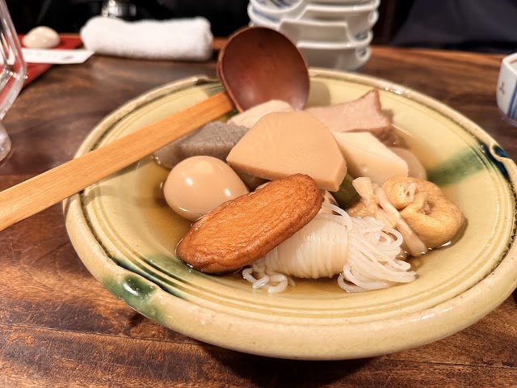
| 営業時間 | 月・火・水・木・金・土 12:00〜22:00 |
|---|---|
| 定休日 | 日曜 |
| 住所 | 長野県松本市大手４丁目１０−８ |
| 予約 | 可 — ☎ 0263-32-0547 ／ 公式サイト |
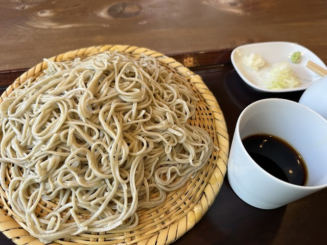
| 営業時間 | 火・水・木・金・土 11:30〜15:30 |
|---|---|
| 定休日 | 月・日曜 |
| 住所 | 長野県松本市深志３丁目１０−１１ |
| 予約 | 要確認 — ☎ 0263-33-0826 |
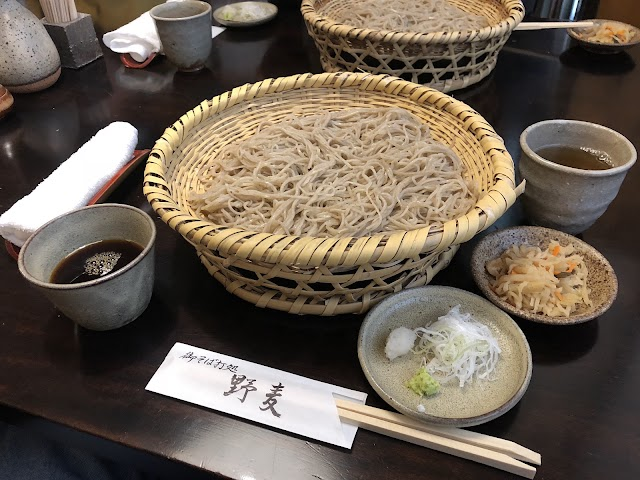
| 営業時間 | 月・木・金 11:30〜14:00 ／ 土・日 11:30〜15:00 |
|---|---|
| 定休日 | 火・水曜 |
| 住所 | 長野県松本市中央２丁目９−１１ |
| 予約 | 要確認 — ☎ 0263-36-3753 ／ 公式サイト |
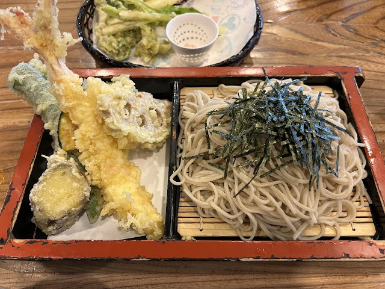
| 営業時間 | 月・火・日 11:00〜16:00 ／ 金・土 11:00〜16:00, 17:30〜20:00 |
|---|---|
| 定休日 | 水・木曜 |
| 住所 | 長野県松本市大手３丁目３−２０ |
| 予約 | 要確認 — ☎ 0263-32-1298 ／ 公式サイト |
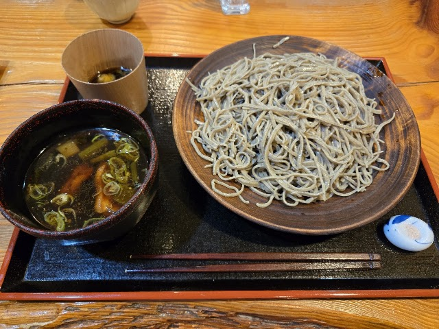
| 営業時間 | 水・木・日 11:30〜14:00 ／ 金・土 11:30〜14:00, 18:00〜20:00 |
|---|---|
| 定休日 | 月・火曜 |
| 住所 | 長野県松本市大手４丁目８−３ |
| 予約 | 要確認 — ☎ 0263-50-4387 |
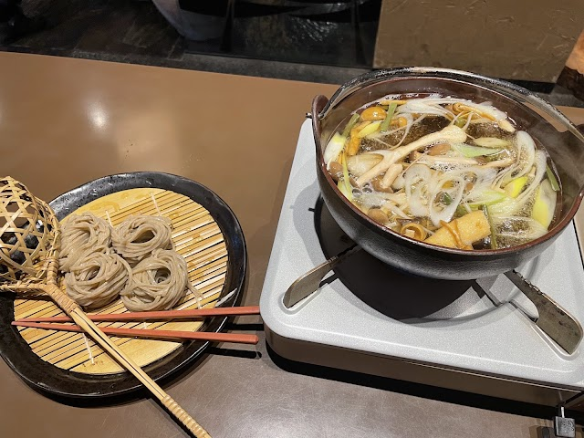
| 営業時間 | 月・火・水・金・土 11:30〜15:00, 17:00〜20:30 ／ 日 11:30〜15:00 |
|---|---|
| 定休日 | 木曜 |
| 住所 | 長野県松本市中央２丁目１−２４ 五幸本町ビル 1Ｆ |
| 予約 | 可 — ☎ 0263-37-1434 ／ 公式サイト |
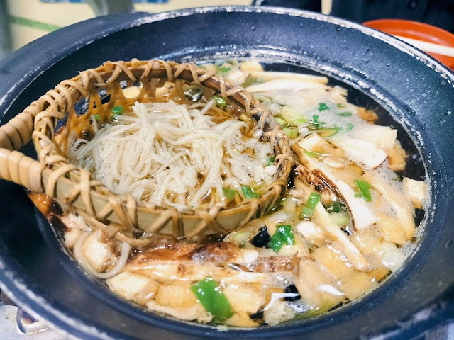
| 営業時間 | 月・火・水・金・土・日 11:00〜14:00 |
|---|---|
| 定休日 | 木曜 |
| 住所 | 長野県松本市奈川１０４４−１２４ |
| 予約 | 可 — ☎ 0263-79-2277 ／ 公式サイト |
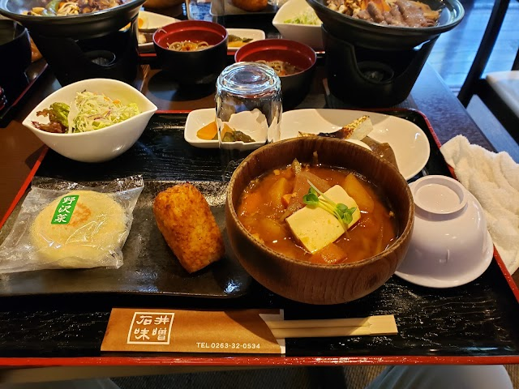
| 営業時間 | 月・火・水・木・金・土・日 9:00〜17:00 |
|---|---|
| 定休日 | なし(要最終確認) |
| 住所 | 長野県松本市埋橋１丁目８−１ |
| 予約 | 要確認 — ☎ 0263-32-0534 ／ 公式サイト |
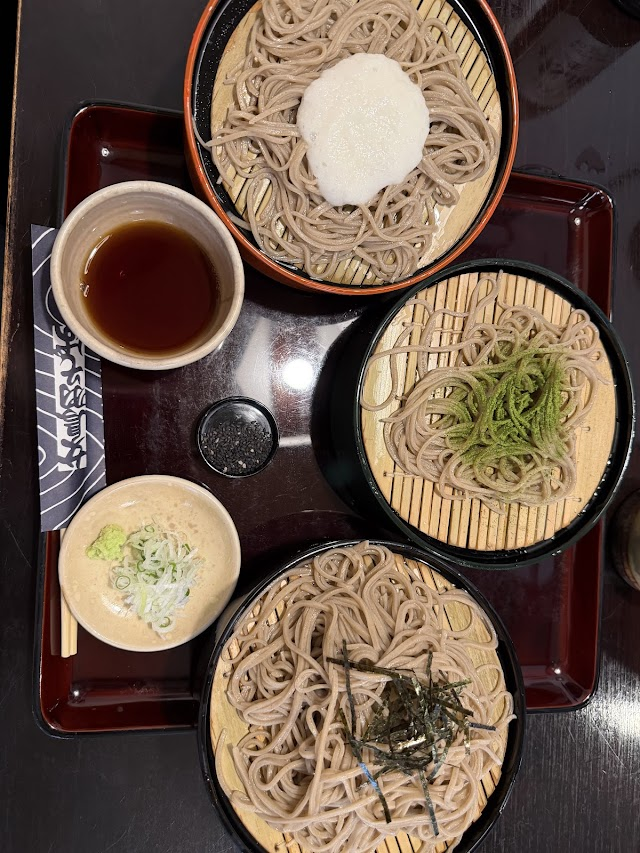
| 営業時間 | 月・火・木・金・土・日 11:00〜17:00 |
|---|---|
| 定休日 | 水曜 |
| 住所 | 長野県松本市中央３丁目４−８ |
| 予約 | 可 — ☎ 0263-35-8502 ／ 公式サイト |
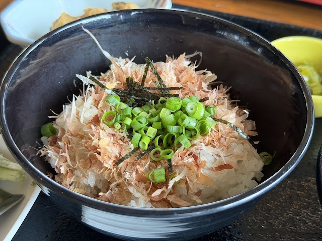
| 営業時間 | 月・火・水・木・金・土・日 11:00〜14:30 |
|---|---|
| 定休日 | なし(要最終確認) |
| 住所 | 長野県安曇野市穂高３６４０ |
| 予約 | 要確認 — ☎ 0263-82-2118 ／ 公式サイト |
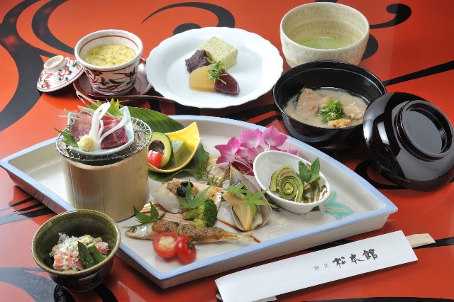
| 営業時間 | 月・火・水・木・金・土・日 11:30〜14:30, 17:30〜22:00 |
|---|---|
| 定休日 | なし(要最終確認) |
| 住所 | 長野県松本市丸の内７−３９ |
| 予約 | 可 — ☎ 0263-32-8000 ／ 公式サイト |
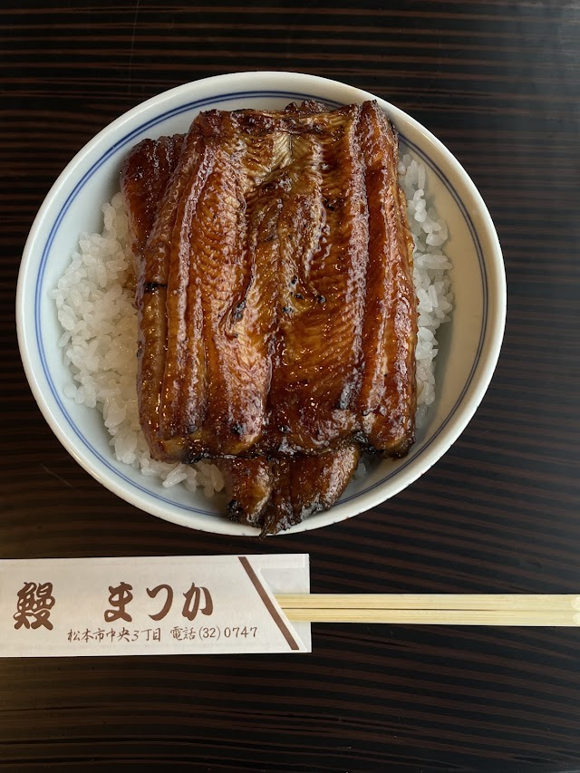
| 営業時間 | 11:00ごろ～売り切れ次第終了 |
|---|---|
| 定休日 | 月曜・火曜・木曜 |
| 住所 | 長野県松本市中央３丁目２−２９ |
| 予約 | 要確認 — ☎ 0263-32-0747 |
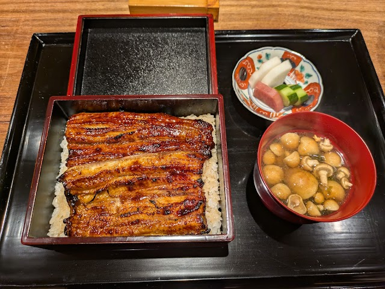
| 営業時間 | 水・木・金・土・日 12:00〜14:00, 18:00〜21:00 |
|---|---|
| 定休日 | 月・火曜 |
| 住所 | 長野県松本市大手４丁目６−１０−２ |
| 予約 | 可 — ☎ 050-3595-8818 ／ 公式サイト |
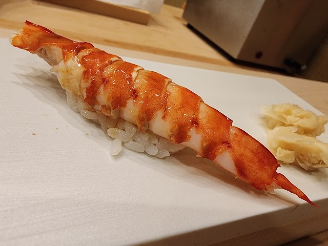
| 営業時間 | 火・木・金・土 12:00〜13:30, 17:30〜20:00 ／ 水 11:30〜13:30, 17:30〜20:00 ／ 日 12:00〜13:30, 17:00〜20:00 |
|---|---|
| 定休日 | 月曜 |
| 住所 | 長野県松本市島内４２５２−７ |
| 予約 | 可 — ☎ 0263-55-7457 ／ 公式サイト |
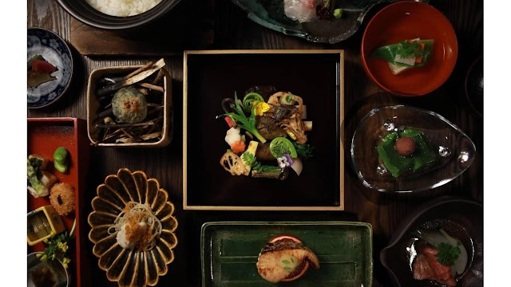
| 営業時間 | 月・火・木・金・土・日 11:30〜14:30, 18:00〜21:30 |
|---|---|
| 定休日 | 水曜 |
| 住所 | 長野県松本市大手４丁目７−１４ |
| 予約 | 可 — ☎ 050-5462-2331 ／ 公式サイト |
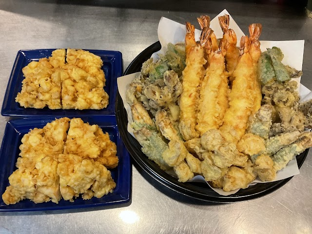
| 営業時間 | 月・火・木・金・土・日 18:00〜21:30 |
|---|---|
| 定休日 | 水曜 |
| 住所 | 長野県松本市大手３丁目６−１ |
| 予約 | 可 — ☎ 0263-32-6789 |
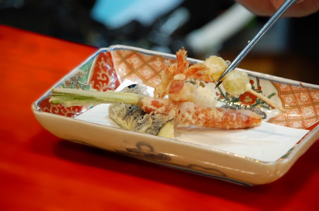
| 営業時間 | 月・火・水・土・日 12:00〜14:00, 18:00〜22:00 ／ 金 18:00〜22:00 |
|---|---|
| 定休日 | 木曜 |
| 住所 | 長野県松本市深志３丁目６−１３ |
| 予約 | 可 — ☎ 0263-55-6305 ／ 公式サイト |
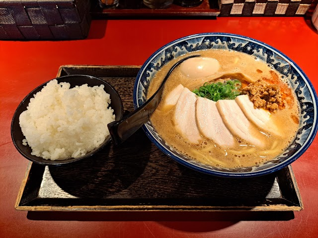
| 営業時間 | 月・火・水・木・金・土・日 11:30〜14:30, 17:30〜21:30 |
|---|---|
| 定休日 | なし(要最終確認) |
| 住所 | 長野県松本市中央１丁目２０−２６ |
| 予約 | 要確認 — ☎ 0263-34-1050 ／ 公式サイト |
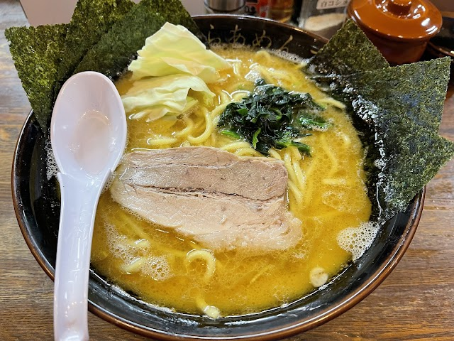
| 営業時間 | 月・火・水・木 11:00〜0:00 ／ 金・土・日 7:00〜0:00 |
|---|---|
| 定休日 | なし(要最終確認) |
| 住所 | 長野県松本市筑摩４丁目３−１ |
| 予約 | 可 — ☎ 0263-28-7744 ／ 公式サイト |
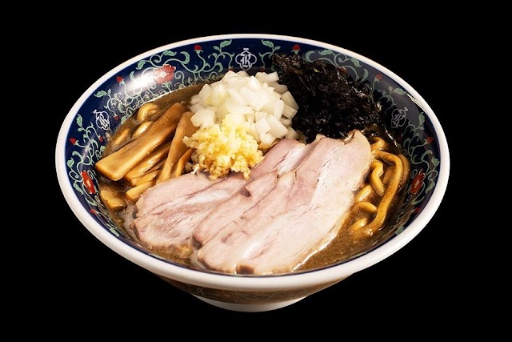
| 営業時間 | 月・火・水・木・金・土・日 11:00〜22:00 |
|---|---|
| 定休日 | なし(要最終確認) |
| 住所 | 長野県松本市高宮南６−１５ |
| 予約 | 要確認 — ☎ 0263-28-6300 ／ 公式サイト |
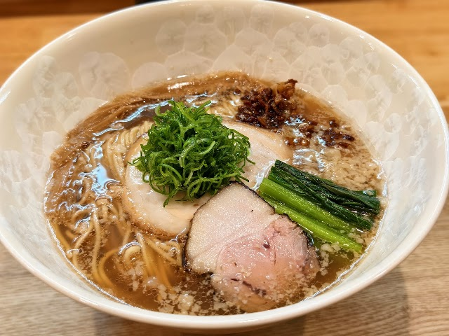
| 営業時間 | 月・火・水・木・金・土・日 11:00〜14:00, 18:00〜20:30 |
|---|---|
| 定休日 | なし(要最終確認) |
| 住所 | 長野県松本市中央１丁目２５−１ 犬飼ビル D |
| 予約 | 要確認 — 公式サイト |
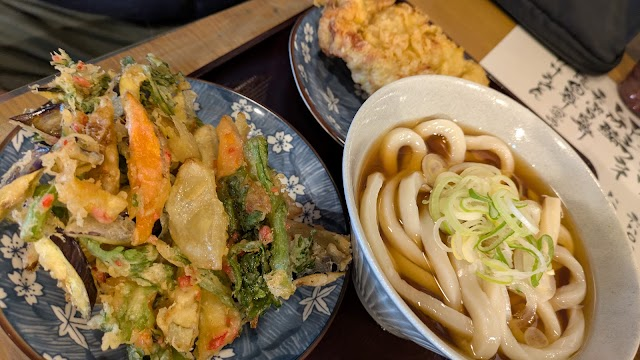
| 営業時間 | 火・水・木・金・土 11:30〜14:30 |
|---|---|
| 定休日 | 月・日曜 |
| 住所 | 長野県松本市大手４丁目２−９ |
| 予約 | 要確認 — ☎ 0263-32-8543 ／ 公式サイト |
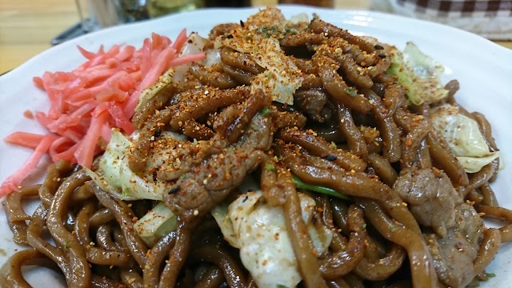
| 営業時間 | 月・水・木・金・土・日 11:00〜14:30, 17:00〜19:30 |
|---|---|
| 定休日 | 火曜 |
| 住所 | 長野県松本市大手２丁目９−２１ |
| 予約 | 要確認 — ☎ 0263-32-5173 |
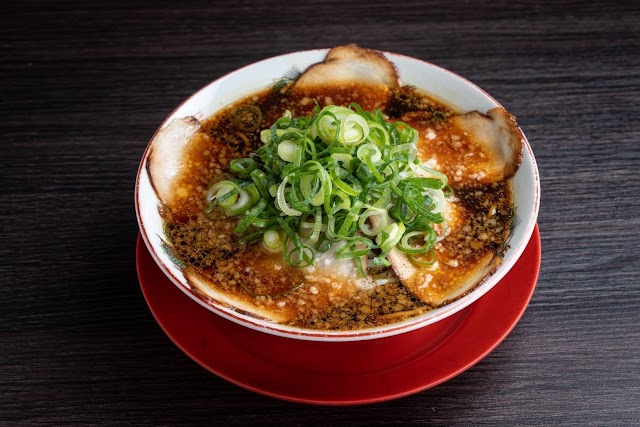
| 営業時間 | 月 18:00〜1:00 ／ 火・水・木 11:30〜14:00, 18:00〜1:00 ／ 金 11:30〜14:00, 18:00〜2:00 ／ 土 18:00〜2:00 |
|---|---|
| 定休日 | 日曜 |
| 住所 | 長野県松本市深志２丁目１−５ |
| 予約 | 要確認 — ☎ 0263-36-0838 ／ 公式サイト |
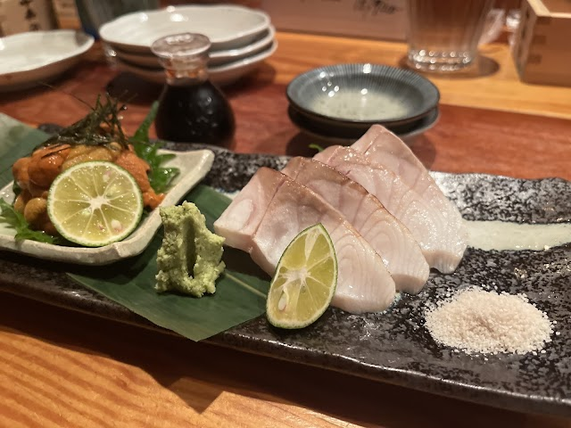
| 営業時間 | 月・火・水・木・金・土・日 17:00〜22:00 |
|---|---|
| 定休日 | なし(要最終確認) |
| 住所 | 長野県松本市大手４丁目８−２１ 十兵衡 |
| 予約 | 可 — ☎ 0263-37-9100 |
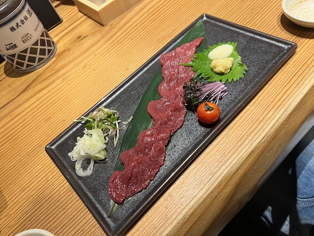
| 営業時間 | 月・火・水・木・金・土 18:00〜0:30 |
|---|---|
| 定休日 | 日曜 |
| 住所 | 長野県松本市中央１丁目３−３ |
| 予約 | 可 — ☎ 0263-39-3447 ／ 公式サイト |
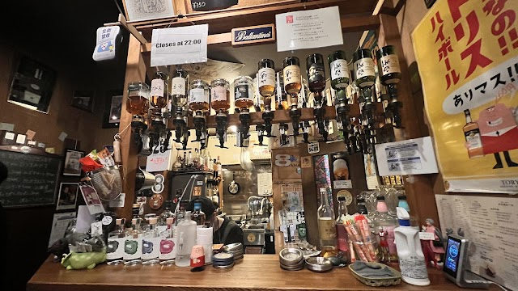
| 営業時間 | 月・火・水・木・金・土 16:00〜22:00 |
|---|---|
| 定休日 | 日曜 |
| 住所 | 長野県松本市大手４丁目１０−１３ |
| 予約 | 要確認 — 公式サイト |
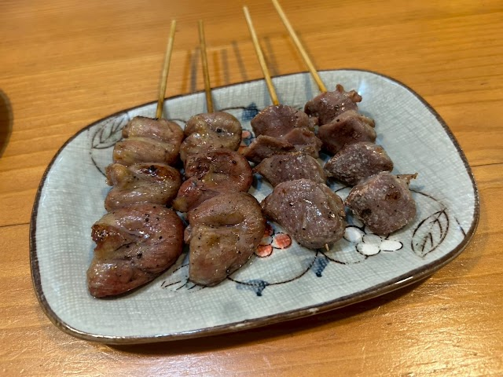
| 営業時間 | 月・火・水・木・金・土 17:00〜0:00 ／ 日 17:00〜22:30 |
|---|---|
| 定休日 | なし(要最終確認) |
| 住所 | 長野県松本市深志１丁目２−１５ ＣＥＮＴＵＲＹＭＡＸＩＭビル 2F |
| 予約 | 可 — ☎ 0263-31-5922 ／ 公式サイト |
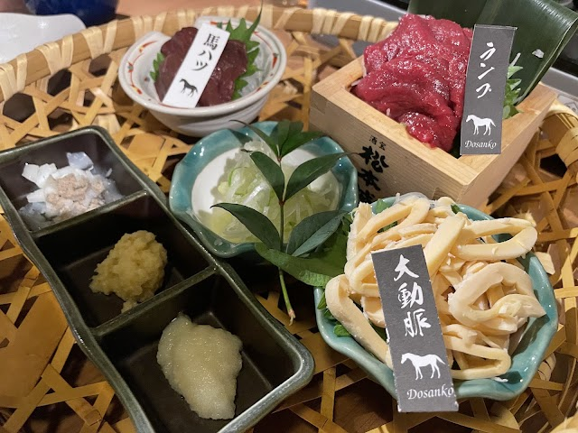
| 営業時間 | 月・火・木・金・土・日 17:00〜23:30 |
|---|---|
| 定休日 | 水曜 |
| 住所 | 長野県松本市中央１丁目２−２１ |
| 予約 | 可 — ☎ 0263-36-7880 ／ 公式サイト |
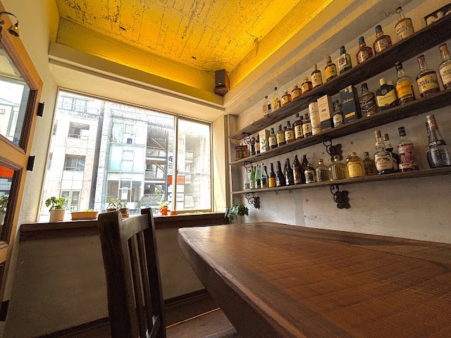
| 営業時間 | 火・水・金 11:30〜15:00 ／ 土・日 11:30〜14:30 |
|---|---|
| 定休日 | 月・木曜 |
| 住所 | 長野県松本市中央２丁目４−２ |
| 予約 | 可 — ☎ 0263-55-3164 |
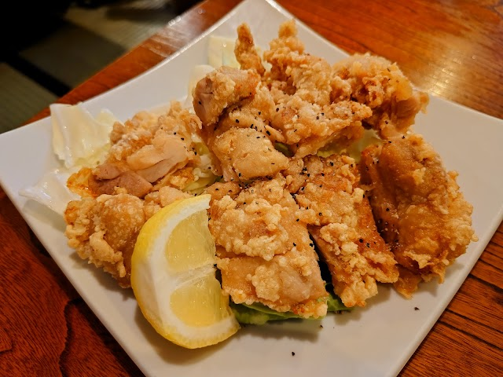
| 営業時間 | 火・水・木 17:00〜22:30 ／ 金 17:00〜23:30 ／ 土 16:30〜23:30 ／ 日 16:30〜22:30 |
|---|---|
| 定休日 | 月曜 |
| 住所 | 長野県松本市中央１丁目３−１ |
| 予約 | 要確認 — ☎ 0263-35-7872 ／ 公式サイト |
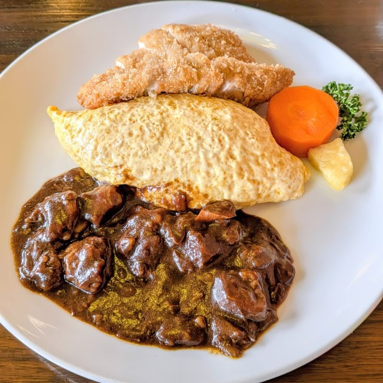
| 営業時間 | 月・火・水・木・金・土・日 11:00〜15:00, 17:30〜20:30 |
|---|---|
| 定休日 | なし(要最終確認) |
| 住所 | 長野県松本市中央２丁目４−１０ |
| 予約 | 可 — ☎ 0263-88-2354 ／ 公式サイト |
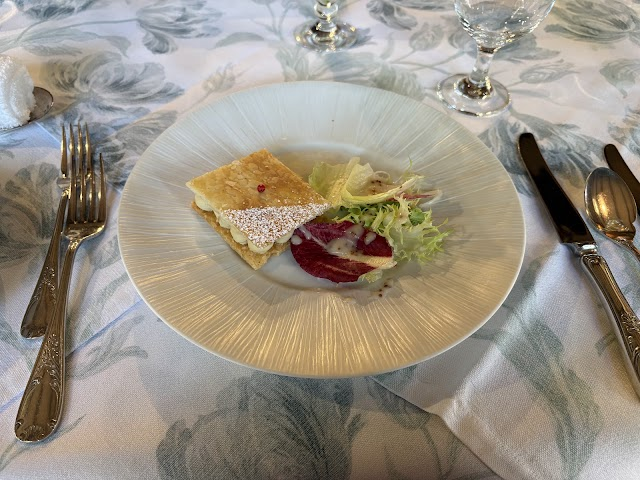
| 営業時間 | 月・火・木・金・土・日 11:30〜21:00 |
|---|---|
| 定休日 | 水曜 |
| 住所 | 長野県松本市大手４丁目２−４ |
| 予約 | 可 — ☎ 0263-32-0882 ／ 公式サイト |
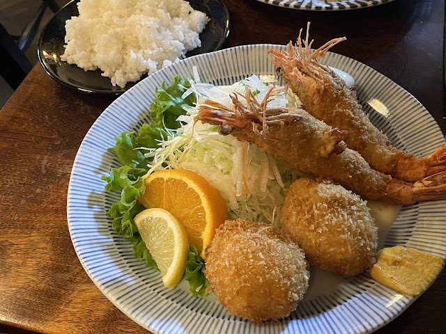
| 営業時間 | 月・水・木・金・土・日 11:30〜14:30, 17:30〜20:30 |
|---|---|
| 定休日 | 火曜 |
| 住所 | 長野県松本市深志２丁目１−２１ |
| 予約 | 可 — ☎ 0263-75-7042 |
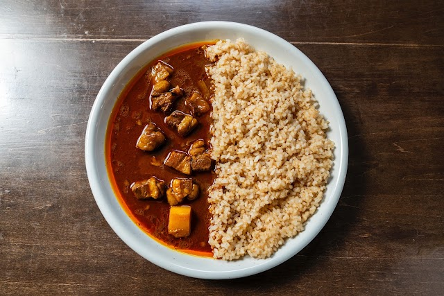
| 営業時間 | 月 11:30〜14:30, 17:00〜22:30 ／ 火・水・木・金・土・日 11:30〜15:00, 17:00〜23:00 |
|---|---|
| 定休日 | なし(要最終確認) |
| 住所 | 長野県松本市深志１丁目４−１０ |
| 予約 | 可 — ☎ 0263-31-0419 ／ 公式サイト |
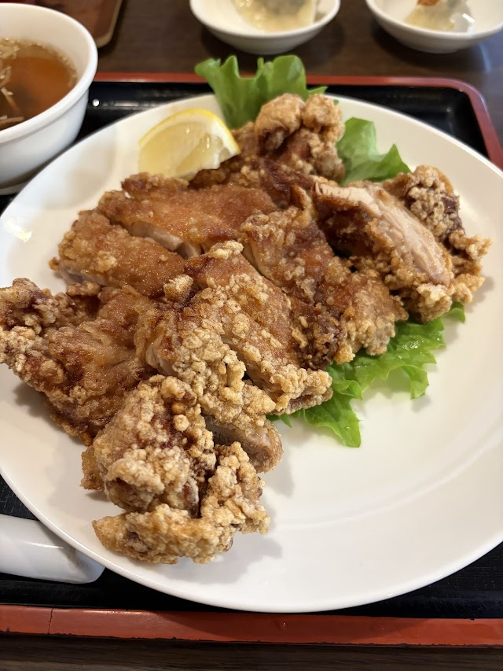
| 営業時間 | 火・水・木・金・土 11:30〜13:30, 17:30〜20:30 ／ 日 11:30〜13:30, 17:30〜20:00 |
|---|---|
| 定休日 | 月曜 |
| 住所 | 長野県松本市大手２丁目３−１０ |
| 予約 | 可 — ☎ 0263-32-4220 |
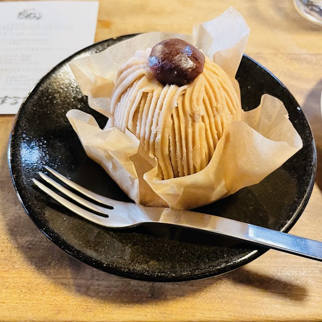
| 営業時間 | 水・木・金・土・日 9:00〜16:00 |
|---|---|
| 定休日 | 月・火曜 |
| 住所 | 長野県松本市中央３丁目３−１０ |
| 予約 | 要確認 — ☎ 0263-32-0115 |
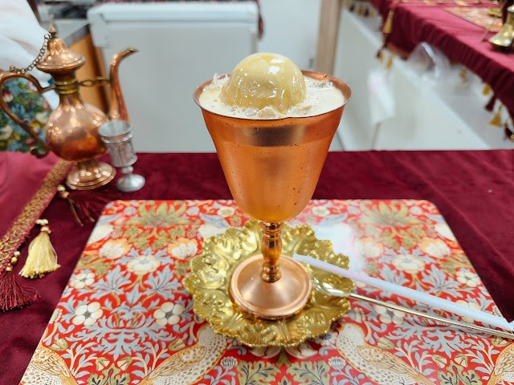
| 営業時間 | 月・水・木・金・土・日 7:00〜17:00 |
|---|---|
| 定休日 | 火曜 |
| 住所 | 長野県松本市深志１丁目２−８ NOVAビル |
| 予約 | 要確認 — ☎ 0263-32-0174 ／ 公式サイト |
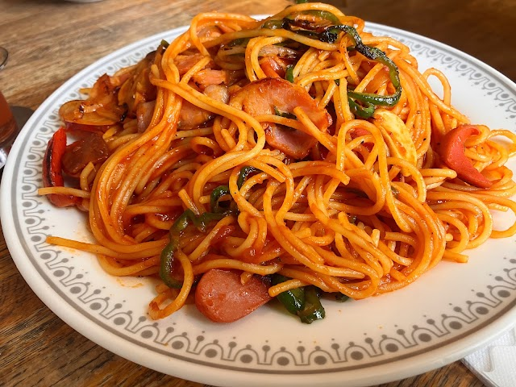
| 営業時間 | 月・火・木・金・土・日 9:30〜16:45 |
|---|---|
| 定休日 | 水曜 |
| 住所 | 長野県松本市深志１丁目２−３ |
| 予約 | 要確認 — ☎ 0263-35-4192 |
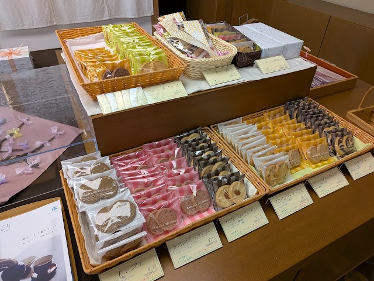
| 営業時間 | 月・火・水・木・金・土・日 9:00〜18:00 |
|---|---|
| 定休日 | なし(要最終確認) |
| 住所 | 長野県松本市中央２丁目２−１５ |
| 予約 | 要確認 — ☎ 0263-32-0506 ／ 公式サイト |
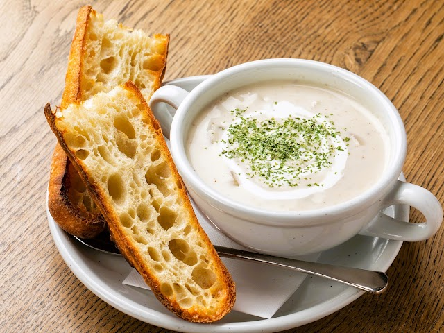
| 営業時間 | 月・水・木・金 9:00〜18:00 ／ 土・日 8:00〜18:00 |
|---|---|
| 定休日 | 火曜 |
| 住所 | 長野県松本市大手４丁目１−１３ スヰト １F |
| 予約 | 要確認 — ☎ 0263-32-5300 ／ 公式サイト |
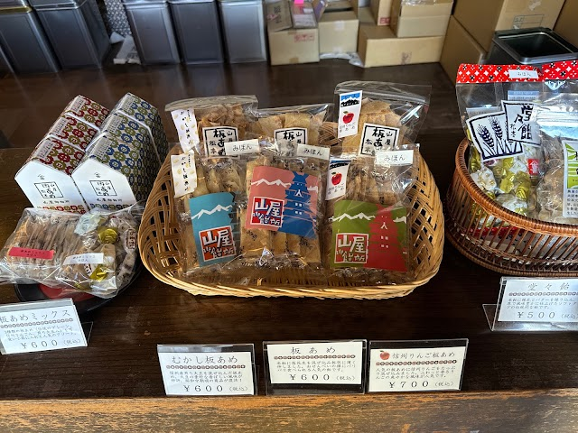
| 営業時間 | 月・火・木・金・土・日 9:30〜17:30 |
|---|---|
| 定休日 | 水曜 |
| 住所 | 長野県松本市大手２丁目１−５ |
| 予約 | 要確認 — ☎ 0263-32-4848 ／ 公式サイト |
| 営業時間 | 月・火・木・金・土・日 7:00〜20:00 |
|---|---|
| 定休日 | 水曜 |
| 住所 | 長野県松本市深志３丁目７−８ |
| 予約 | 要確認 — ☎ 0263-50-5967 ／ 公式サイト |
本ガイドは個人利用目的で作成。掲載情報は2026年8月時点の調査に基づく。写真出典: Google Maps投稿写真(©各投稿者/Google)。